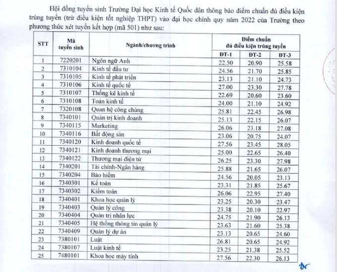
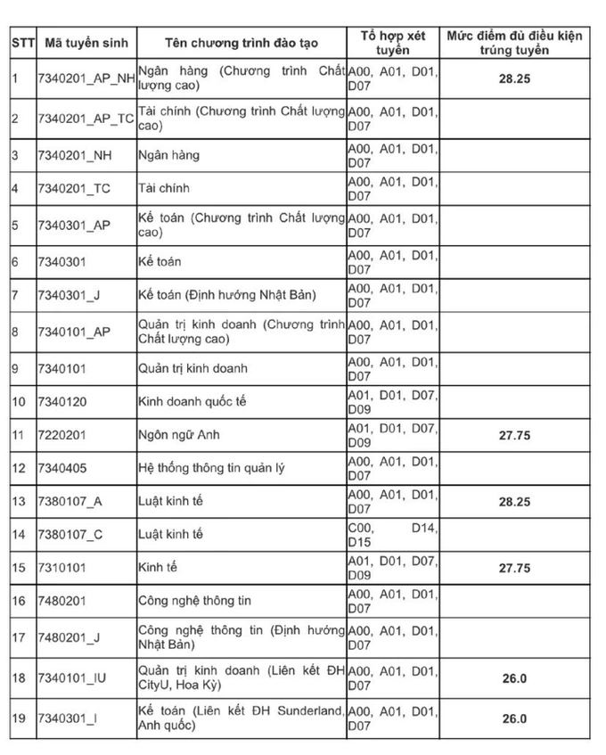
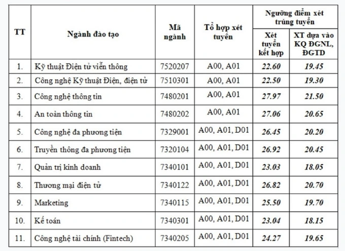
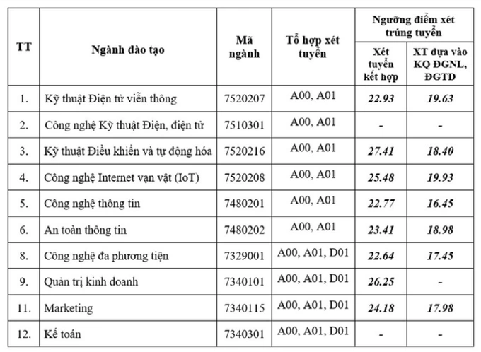
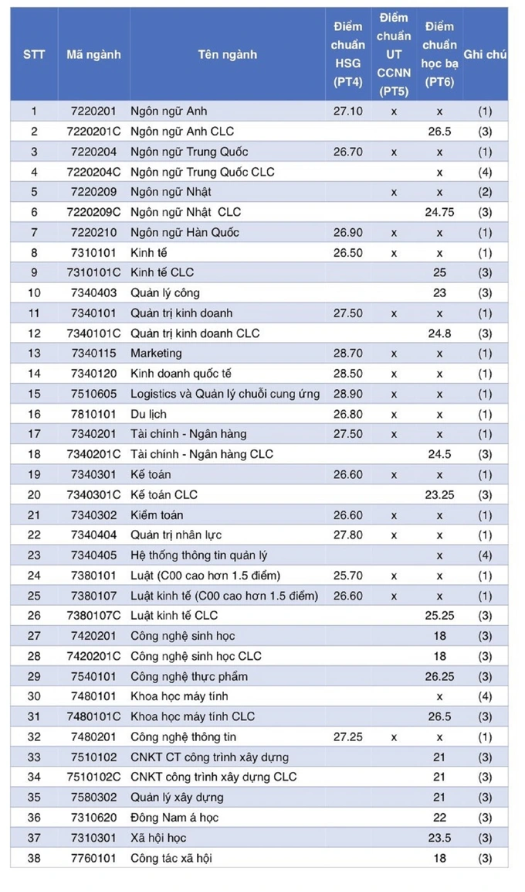

Nhiều trường đại học công bố điểm chuẩn theo phương thức xét tuyển sớm
Tới thời điểm này, một số trường đại học trên cả nước đã thông báo mức điểm đủ điều kiện trúng tuyển (trừ điều kiện tốt nghiệp THPT) đối với các phương thức xét tuyển sớm.Ngày 20/7, trường ĐH Kinh tế quốc dân thông báo điểm chuẩn đủ điều kiện trúng tuyển đại học chính quy năm 2022 theo phương thức xét tuyển kết hợp đối tượng 1, 2, 3 (mã phương thức: 501). Đây là nhóm xét tuyển sớm, không sử dụng kết quả thi tốt nghiệp THPT.
Theo đó, điểm chuẩn đủ điều kiện trúng tuyển (trừ điều kiện tốt nghiệp THPT) vào đại học chính quy năm 2022 của trường theo phương thức xét tuyển kết hợp (mã 501) như sau:

Về kết quả xét tuyển thẳng, ưu tiên xét tuyển Đại học chính quy năm 2022 (mã phương thức xét tuyển: 301), nhà trường tuyển thẳng 142 thí sinh tham dự kỳ thi Olympic quốc tế; thí sinh đạt giải nhất, nhì ba trong kỳ thi học sinh giỏi quốc gia và thí sinh đạt giải nhất trong Cuộc thi khoa học, kỹ thuật cấp quốc gia, tốt nghiệp Trung học phổ thông (THPT) năm 2022. Những thí sinh này cần có tổng điểm thi tốt nghiệp THPT năm 2022 theo tổ hợp xét tuyển của trường đạt ngưỡng đảm bảo chất lượng đầu vào dự kiến từ 20 điểm trở lên.
Ngoài ra, nhà trường xét trúng tuyển 11 thí sinh dự bị đại học đã hoàn thành chương trình dự bị đại học và đạt điểm trúng tuyển của các ngành theo Đề án tuyển sinh năm 2022. Xét trúng tuyển 3 thí sinh diện NQ30A của Chính phủ đã trúng tuyển năm 2021 và hoàn thành chương trình dự bị đại học. Xét trúng tuyển 5 thí sinh theo NQ30A của Chính phủ.
Trường ĐH Kinh tế quốc dân cũng ưu tiên xét tuyển đối với 170 thí sinh đạt giải trong kỳ thi học sinh giỏi quốc gia và thí sinh đạt giải trong Cuộc thi khoa học, kỹ thuật cấp quốc gia, tốt nghiệp THPT năm 2020, đăng ký xét tuyển vào trường theo kết quả thi tốt nghiệp THPT năm 2022, được cộng điểm ưu tiên xét tuyển.
Ngoài trường ĐH Kinh tế quốc dân, nhiều trường ĐH khác cũng đã công bố ngưỡng điểm đủ điều kiện trúng tuyển vào đại học hệ chính quy năm 2022 theo các phương thức xét tuyển sớm.
Ngày 19/7, Học viện Ngân hàng thông báo mức điểm đủ điều kiện trúng tuyển (trừ điều kiện tốt nghiệp THPT) đối với các phương thức xét tuyển sớm.
Với phương thức xét tuyển học bạ (mã phương thức 200), thí sinh được xét đủ điều kiện trúng tuyển (trừ điều kiện tốt nghiệp THPT) đối với ngành đăng ký nếu thỏa mãn đồng thời cả hai điều kiện: Có học lực năm lớp 12 đạt loại Giỏi; Có điểm xét tuyển cao hơn hoặc bằng mức điểm đủ điều kiện trúng tuyển của ngành xét tuyển, cụ thể:

Với phương thức xét tuyển dựa trên chứng chỉ ngoại ngữ quốc tế (mã 408), thí sinh được xét là đủ điều kiện trúng tuyển (trừ điều kiện tốt nghiệp THPT) đối với ngành đăng ký nếu thỏa mãn đồng thời cả hai điều kiện: Có học lực năm lớp 12 đạt loại Giỏi; Có chứng chỉ ngoại ngữ IELTS đạt từ 6.0 trở lên, TOEFL iBT đạt từ 72 điểm trở lên hoặc chứng chỉ tiếng Nhật đạt từ N3 trở lên (chỉ riêng đối với chương trình đào tạo Kế toán định hướng Nhật bản và Công nghệ thông tin định hướng Nhật Bản).
Với Học viện Công nghệ Bưu chính Viễn thông, ngưỡng điểm xét đủ điều kiện trúng tuyển ở cơ sở đào tạo phía Bắc như sau:

Ở cơ sở phía Nam của Học viện Công nghệ Bưu chính Viễn thông, ngưỡng điểm này như sau:

Tại khu vực miền Nam, một số trường ĐH cũng đã công bố điểm chuẩn trúng tuyển các phương thức tuyển sinh sớm.
Trường ĐH Mở TP.HCM thông báo kết quả xét tuyển các phương thức 3 đến 6 (đợt Học bạ) trình độ Đại học Chính quy 2022 như sau:

Nhà trường lưu ý, thí sinh chịu hoàn toàn trách nhiệm với những thông tin đã khai báo khi đăng ký xét tuyển. Sau khi thí sinh làm thủ tục nhập học (dự kiến từ 18 - 30/9), trường sẽ tiến hành hậu kiểm hồ sơ. Trường hợp có bất kỳ sai sót (thông tin cá nhân, điểm, ưu tiên…), nhà trường sẽ ra quyết định kỷ luật và buộc thí sinh thôi học.
Ngày 20/7, Hội đồng tuyển sinh trường Đại học Công nghệ TP.HCM (HUTECH)cũng công bố điểm chuẩn phương thức xét tuyển điểm thi Đánh giá năng lực của ĐHQG TP.HCM và hai phương thức xét tuyển học bạ THPT cho tất cả ngành đào tạo trình độ đại học chính quy.
Với phương thức xét tuyển theo điểm thi đánh giá năng lực, ngành Dược học có mức điểm chuẩn cao nhất là 900 điểm. Các ngành Quản trị kinh doanh, Digital Marketing, Công nghệ thông tin, Công nghệ kỹ thuật ô tô có điểm chuẩn là 800 điểm. Ngành Thiết kế đồ họa, Ngôn ngữ Anh, Truyền thông đa phương tiện, Quan hệ công chúng, Marketing, Logistics và quản lý chuỗi cung ứng, Thú y, Điều dưỡng, Kỹ thuật xét nghiệm y học có điểm chuẩn là 750 điểm.
Các ngành còn lại có điểm chuẩn dao động 650 - 700 điểm. Mức điểm chuẩn nêu trên đã bao gồm điểm ưu tiên khu vực, đối tượng và được tính như sau: Điểm chuẩn = Tổng điểm bài thi ĐGNL + Tổng điểm ưu tiên quy đổi.
Đối với hai phương thức xét tuyển học bạ THPT gồm xét tuyển học bạ 3 học kỳ (học kỳ 1 lớp 12 và học kỳ 1, học kỳ 2 lớp 11) và xét tuyển học bạ lớp 12 theo tổ hợp 3 môn có điểm chuẩn dao động từ 18 - 24 điểm tùy ngành.
Cụ thể, ở cả hai phương thức xét tuyển học bạ, điểm chuẩn ngành Dược là 24 điểm, các ngành Điều dưỡng và Kỹ thuật xét nghiệm y học là 19,5 điểm. Tất cả các ngành còn lại có mức điểm chuẩn là 18 điểm. Mức điểm này dành cho thí sinh khu vực 3 (không ưu tiên đối tượng, khu vực). Mức chênh lệch điểm chuẩn giữa hai nhóm đối tượng kế tiếp là 1,00 điểm; giữa hai khu vực kế tiếp là 0,25 điểm.
Điểm xét trúng tuyển (đảm bảo điều kiện xét tuyển trên 18 điểm) được công bố bao gồm điểm ưu tiên khu vực, đối tượng và được tính như sau: Phương thức Xét học bạ 3 học kỳ: Điểm xét trúng tuyển = (Điểm TB học kỳ 1 lớp 12 + Điểm TB học kỳ 2 lớp 11 + Điểm TB học kỳ 1 lớp 11) + Điểm ưu tiên. Phương thức Xét học bạ lớp 12 theo tổ hợp 3 môn: Điểm xét trúng tuyển = (Điểm TB lớp 12 môn 1 + Điểm TB lớp 12 môn 2 + Điểm TB lớp 12 môn 3) + Điểm ưu tiên.